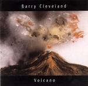

| Artist: | Barry Cleveland |
| Title: | Volcano |
| Label: | AMP Records and Music AMP-CD047 |
| Length(s): | 51 minutes |
| Year(s) of release: | 2003 |
| Month of review: | [03/2004] |
| 1) | Makanda | 4.50 |
| 2) | Tongue Of Fire | 5.36 |
| 3) | Secret Prescriptions Of The Bedroom | 5.49 |
| 4) | Black Diamond Express | 4.10 |
| 5) | Ophidian Waves | 5.32 |
| 6) | Obsidian Night | 5.32 |
| 7) | Volcano | 4.51 |
| 8) | Rhumbatism | 4.42 |
| 9) | Dervish Circles | 6.30 |
| 10) | Dark Energy | 5.10 |
Secret Prescriptions Of The Bedroom continues the dark and moody line of music with wordless vocals and meandering bass clarinet and bass flute. With all these references it is not surprising that the music is closest to the most African side of Peter Gabriel and with the large amount of wind instrument, Jon Hassell. Of course, Hassell limits himself to the trumpet, while Norbert Stachel alternates between flute and clarinet and an occasional saxophone.
Black Diamond Express continues along the same line, the percussion quick and tidy, the sax meandering and screaming. This is even a bit danceable at times. Ophidian Waves however is on the darker side again, very atmospheric and slow moving. The percussion is a bit train like here.
In view of the likeness in name, one might expect Obsidian Night to be linked in some way to its predecessor. They also happen to have equal length. This one is even more brooding and eerier than the foregoing. The bass is also more pronounced, while the percussion is brushier, less rhythmic. There is also some mood building synths to be recognized (no matter how they are played (turns out these are guitars again)). The music comes over as more improvised here, and closer to Cloud Chamber, with names like Tony Levin and such cropping up. The electric guitar also pops up towards the end.
With Volcano we are back to the more frolic melodies of the opener. This is a merry track in the line of Japan's Obscure Alternatives, but without the vocals, and quite a bit more lightfooted too.
Rhumbatism is a play on words, but an instrumental one. I do not really here the rheumatism anywhere, which is a good thing, but the danceable beat is there, with shakers and congas going full speed. The guitar work also lends the song a Santana feel.
Dervish Circles is the second and final track with vocals. I like Ferra's voice, the prominent bass work reminds strongly of Tony Levin. The vocals of Maxwell Taylor also feature here, these vocals do have words. A nice addition, and I guess I would like some more of that. Dark Energy is quite melodious with a strong beat and plenty of repetition. The ending is menacing.